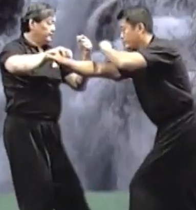
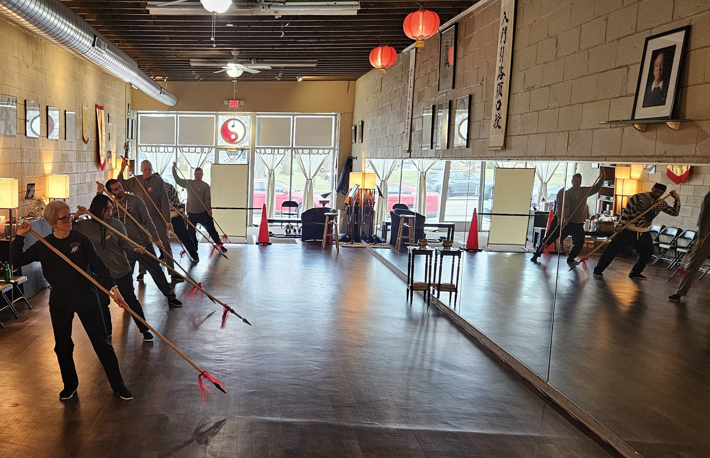

課程
Classes & Curriculum
Authentic Wu Style taught at every level — from first steps to full discipleship.
All classes are taught by Advanced Level certified instructors in the direct Wu family lineage. Beginners are welcome year-round — contact us to find the next available session.
Hand Form 表格
The foundation of the entire system. Students begin with the 12-posture introductory form before progressing to the full 108-step small-circle form and, eventually, the large-circle form. Instruction is one-on-one or in small groups so each student moves at their own pace.
The 108-step form contains the complete principles of Wu Style: rooting, yielding, silk-reeling, and internal power generation.
View Schedule →
Pushing Hands 推手
Two-person sensitivity exercises that develop listening energy (ting jin) and neutralising skill. Courses progress from basic fixed-step push hands through the complex 9-palace free-step form.
Intermediate students also receive Chi Kung (qigong) instruction and detailed form refinement in these sessions.

Weapon Forms 武器型態
Offered to advanced intermediate students in this sequence: Spear (槍), Sabre (刀), and Sword (劍). Each weapon form develops a distinct quality of power and extends the principles learned in the hand form.
Students must demonstrate sufficient proficiency in the 108 form before beginning weapon study.
Disciples 門徒
Full members of the Academy, formally accepted by the Shifu (师父) into the school's lineage. Disciples have access to open training sessions, advanced form refinement, Chi Kung applications, combat applications, and the right to teach Tai Chi under the Academy's banner. Discipleship is by invitation after demonstrated commitment and character.
5 Steps / Ba Fa Wu Bu 太极八法五步
A short, accessible qigong sequence suitable for all ages, including those with limited mobility. Regular practice clears the body's meridians, balances qi and blood, and eases chronic pain. Many students begin with Ba Fa Wu Bu as a gentle gateway to personal peace and tranquility before transitioning to the full form curriculum.
This sequence is especially recommended for seniors and hospital/rehabilitation settings — an area in which our Academy has extensive experience.